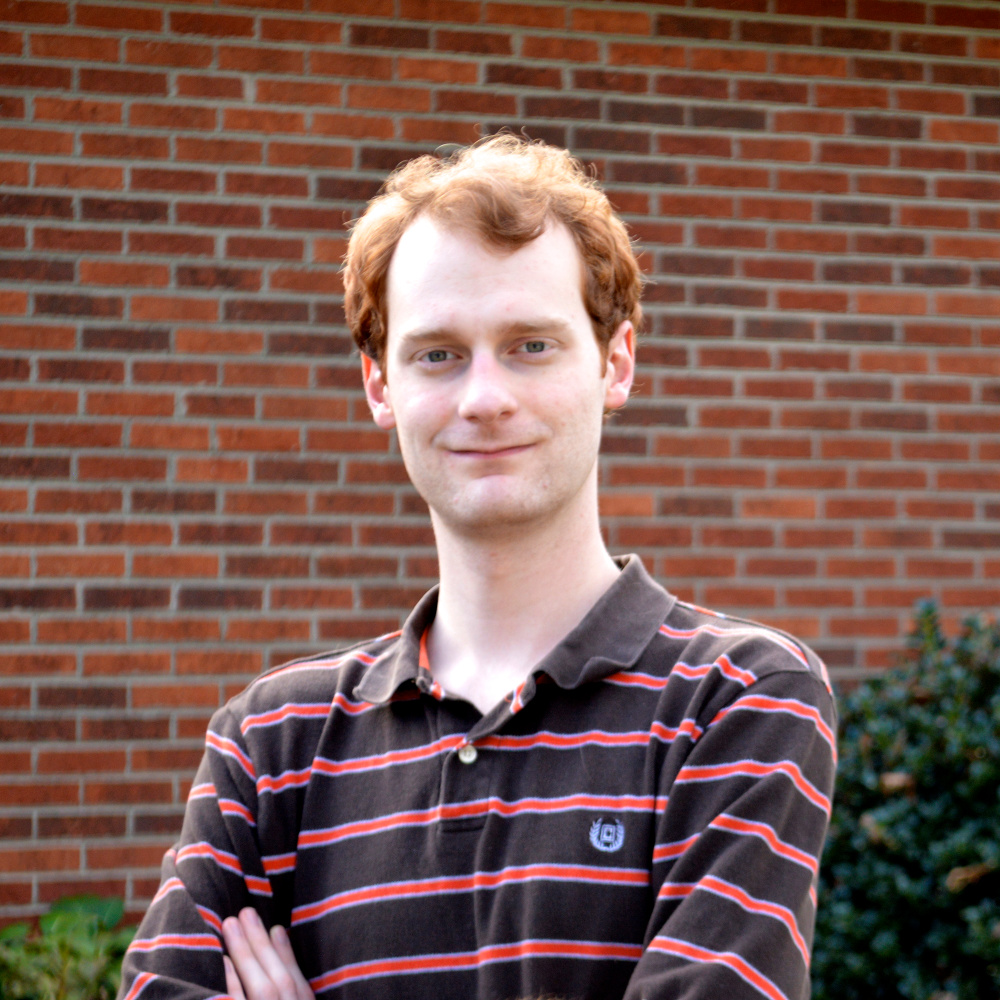
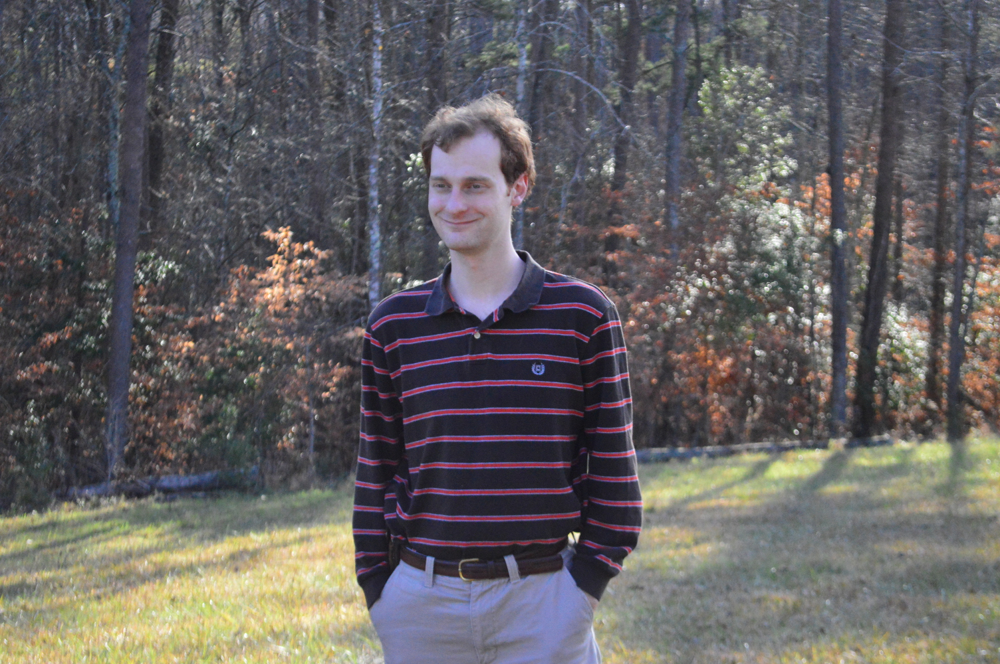

<div class="row">
  <div class="col-md-8 col-md-offset-2">
    <h2>Who am I?</h2>
 
    <div class="panel panel-default">
      <div class="panel-heading">
        <h3 class="panel-title">About Me</h3>
      </div>
      <div class="panel-body">

        <div class="media">
          <div class="media-left">
            
          </div>
          <div class="media-body">
            <p>I was born and raised in North Carolina out in the middle of
               nowhere. Despite moving to the "big city" to go to college and
               work in technology, I'm a country boy at heart. I enjoy running,
               hiking in the woods, and southern comfort food.</p>
            <p>I got my start in programming through the TI-83+ graphing
               calculator. I studied the chapter on the built-in programming
               language extensively until I was able to make fairly complicated
               games for the platform, including an RPG, Pong, and Frogger.</p>
            <p>Despite growing up without internet access, I found creative ways
               to teach myself how computers worked. I developed local websites
               on Microsoft pubisher to teach myself HTML, and played with my
               system configuration until I knew what every system setting did.
               I eventually picked up GameMaker and used it to fully explore
               object-oriented programming, even though my computer was unable
               to run the games I had compiled.</p>
            <p>I didn't really start learning how to program until I started
               using Linux in college. Linux made programming tools such as
               C compilers and Python interpreters much more accessible, finally
               enabling me to start learning. At that point, my technical
               knowledge skyrocketed as I taught myself new languages, socket
               programming, and OpenGL.</p>
            <p>Today, I generally prefer to write code to automate tasks and
               learn new tricks rather than develop full-fledged user applications.
               I absorb information like a sponge, and prefer to spend my
               personal time expanding my skillset rather than starting big
               projects. For that reason, I enjoy taking courses on
               <a href="http://coursera.org">Coursera</a> and
               <a href="http://udacity.com">Udacity</a>.</p>
            <p></p>
          </div>
        </div>

      </div>
    </div>


    <div class="panel panel-default">
      <div class="panel-heading">
        <h3 class="panel-title">Education</h3>
      </div>
      <div class="panel-body">

        <div class="media">
          <div class="media-left">
            
          </div>
          <div class="media-body">
            <p>I started attending North Carolina State University for Computer
               Science in August of 2008, and completed two degree programs
               (B.Sc. '11, M.Sc. '13).</p>
            <p>During my undergraduate career, I was involved in research with
               <a href="http://people.engr.ncsu.edu/mfms/">Dr. Matt Stallmann</a>
               in the experimental evaluation of algorithms. I implemented and
               benchmarked classical and modified algorithms for minimum spanning
               trees and ran them against large data sets to measure their
               performance.</p>
            <p>For my undergraduate senior design project, I developed a real-time
               operating system that exposed a serial interface for interacting
               with a custom robot platform. The OS was written in C for the PIC
               microcontroller, and interfaced with a Java API that I provided
               to the rest of my team to develop for the platform.</p>
            <ul>
              <li>B.Sc. in Computer Science, GPA 3.6/4.0, <em>Magna cum Laude</em></li>
              <li>M.Sc. in Computer Science, GPA 3.8/4.0</li>
              <li>Inter-institutional registration at Duke University</li>
              <li>Inducted into <em>Upsilon Pi Epsilon</em> honor society for
                  the Computing Disciplines</li>
              <li>Completed the Certificate of Accomplishment in Teaching and
                  the Preparing the Professoriate Teaching fellowships</li>
            </ul>
          </div>
        </div>

      </div>
    </div>


  </div>
</div>
